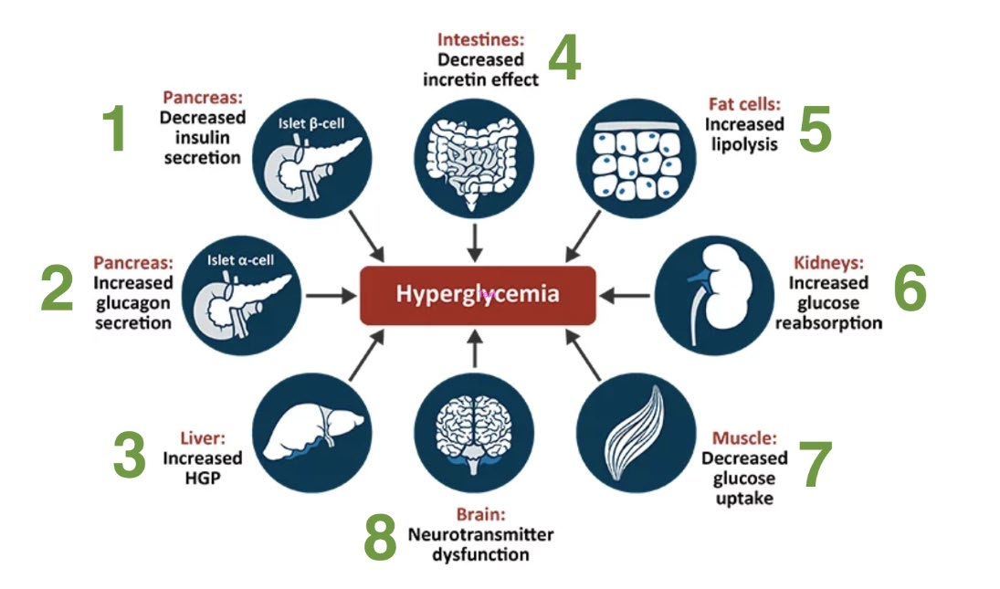
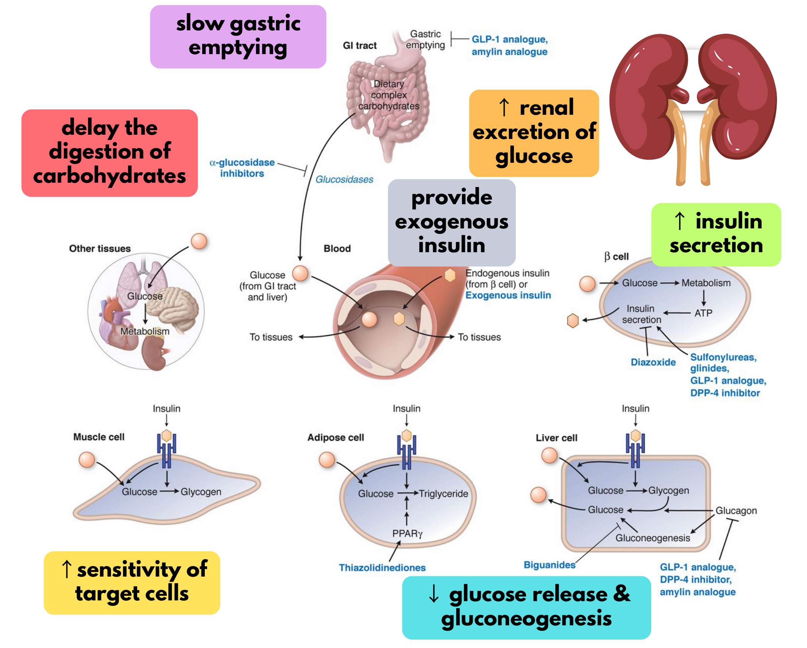
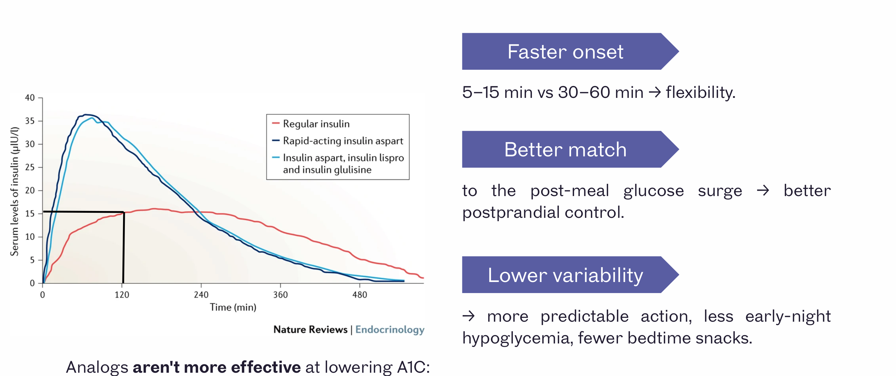

Diabetes
Diabetes start to finish: who has it and which type, running type 1, every drug and insulin, DKA vs HHS, then targets, complications and pregnancy. Warm up with 14 questions to find your weak spots, work through the four topics (the step bar marks the ones you missed), then finish with a 28-question final. Every answer links back to the lecture it came from.
Warm-up quiz
Cold, no notes. It's a diagnostic, not a grade: your score per topic lands on the step bar and tells you where to spend the day.
Diabetes Diagnosis & T1DM Care
Who has diabetes, which type, and how a child with type 1 is run day to day. Drugs, insulin and DKA come next.
- Any one of: fasting glucose ≥ 7.0, A1c ≥ 6.5% (adults; not for suspected T1DM), 2-h OGTT or random ≥ 11.1 mmol/L.
- Symptoms (thirst, polyuria, weight loss) → one abnormal value is enough. No symptoms → repeat on another day. Acute illness or steroids can raise glucose: confirm once recovered.
- T1DM = autoimmune β-cell loss (GAD, IA-2, insulin, ZnT8 antibodies). About 20% of β-cells are left at diagnosis, hence the honeymoon. T2DM = insulin resistance + relative deficiency.
- A high reading reflects the dose before it. High lunch glucose → raise the breakfast rapid-acting dose.
- Hypoglycemia: can they swallow? Oral glucose if yes, glucagon if no, recheck in 15 min.
The numbers that diagnose
| Test | Prediabetes | Diabetes |
|---|---|---|
| Fasting glucose | 6.1–6.9 (IFG) | ≥ 7.0 |
| 2-h 75 g OGTT | 7.8–11.0 (IGT) | ≥ 11.1 |
| A1c | 6.0–6.4% | ≥ 6.5% |
| Random glucose | — | ≥ 11.1 with symptoms |
Why these cut-offs? They're where retinopathy risk starts to climb steeply.
Type 1 or type 2 in an adult? Usually inferred from the course and the response to treatment. When it's genuinely unclear: high C-peptide + negative anti-GAD favours T2DM. Sudden weight loss leans T1DM; weight gain or stopping exercise leans T2DM.
Who's at risk of T2DM: Indigenous, South Asian, Asian, Hispanic and African-descent communities; previous GDM; first-degree relatives (monozygotic twin ~90%).
Eight organs, not three

| Organ | What goes wrong |
|---|---|
| β-cell | Less insulin (~80% of function gone by prediabetes) |
| α-cell | More glucagon |
| Liver | More glucose output (drives the fasting glucose) |
| Gut | Weaker incretin effect (↓ GLP-1, GIP resistance) |
| Fat | More lipolysis → free fatty acids |
| Kidney | More SGLT2, more glucose reabsorbed |
| Muscle | Less glucose uptake |
| Brain | Blunted GLP-1 satiety signal |
Running type 1 in a child
| Phase | Insulin need |
|---|---|
| Honeymoon | < 0.5 U/kg/day |
| Prepuberty | 0.7–1.0 |
| Puberty | 1.0–2.0 (insulin resistance rises) |
| Targets (under 18) | |
|---|---|
| Fasting | 4–8 mmol/L |
| After meals | 5–10 mmol/L |
| A1c | < 7.5% |
Basal-bolus (4 shots/day) or a pump lets meals be flexible. NPH-based 3 shots/day is simpler but locks in a meal and snack schedule. A CGM shows time in range, which two people with the same A1c can differ wildly on. DCCT: tighter control means fewer microvascular complications but more severe lows.
Hypoglycemia
| Early (adrenergic) | Late (neuroglycopenic) |
|---|---|
| Shaky, sweaty, anxious, pale, hungry | Drowsy, confused, seizing, coma |
Any gland: structure or function
Every endocrine problem is a mass (benign or malignant, and what it presses on) or a hormone problem (too much or too little), sometimes both. Suspect a deficiency → stimulation test (ACTH stimulation for adrenal failure). Suspect an excess → suppression test (1 mg overnight dexamethasone for Cushing syndrome).
Diabetes Drugs & Insulin
Where each class acts, the ADR that follows from it, who can't have it, renal dosing, and how insulin structure sets its timing.
- Metformin lactic acidosis = acute illness / volume depletion + renal impairment, not just "any CKD".
- TZDs: absolutely contraindicated in heart failure and liver dysfunction.
- SGLT2i: not for T1DM (DKA, including euglycemic DKA); weight loss; sick-day hypovolemia; genital infections.
- GLP-1 RAs: no MTC, MEN2 or pancreatic cancer. DPP-4i don't carry that warning; linagliptin needs no renal adjustment.
- Dialysis: insulin is essentially the only fully usable agent. Only the insulin monomer works; regular is the IV insulin; pumps use rapid-acting only.

Every class, side by side
| Class | How | Hypo risk / weight | Watch for | Avoid in |
|---|---|---|---|---|
| Metformin | ↑ AMPK, ↓ gluconeogenesis | Low / neutral | GI upset, ↓ B12, lactic acidosis (rare) | eGFR < 30; acute illness |
| TZD (pioglitazone) | PPARγ | Low / gain | Fluid retention, ↓ BMD, fractures | HF, liver disease, bladder cancer |
| Sulfonylurea | Close β-cell K⁺/ATP channel | High / gain | Interactions; glyburide's renal metabolites | Renal/hepatic failure, pregnancy, elderly |
| Meglitinide (repaglinide) | Same channel, other site; short | Lower / gain | With meals, TID | Caution in liver disease |
| GLP-1 RA (semaglutide) | Glucose-dependent insulin, ↓ glucagon, slow emptying | Low / loss | GI effects, pancreatitis | MTC, MEN2, pancreatic cancer |
| DPP-4i (-gliptin) | ↑ endogenous GLP-1 | Low / neutral | Joint pain; saxagliptin HF signal | — (no MTC warning) |
| SGLT2i (-flozin) | ↑ urinary glucose and Na | Low / loss | Genital infections, hypovolemia, amputation, fracture | T1DM, dialysis |
| Acarbose | Slows carb digestion | Low / neutral | Flatulence | IBD, IBS, obstruction |
| Renal | As eGFR falls | Dialysis |
|---|---|---|
| Metformin | Reduce < ~45 | Avoid |
| Sulfonylureas | Avoid glyburide early | Avoid |
| DPP-4i | Reduce sita/saxa; linagliptin none | Linagliptin OK |
| SGLT2i | Efficacy falls; continue for cardiorenal benefit | Avoid |
| Pioglitazone | No change | No change |
| Insulin | May need less (renal clearance) | Usable |
Insulin
| Insulin | Onset | Duration |
|---|---|---|
| Lispro / aspart / glulisine | 5–15 min | 3–6 h |
| Fast-acting aspart | ~2.5 min | As aspart |
| Regular | 30–60 min | Longer tail |
| NPH | 3–4 h | 10–16 h (more nocturnal hypos) |
| Detemir | 0.5–1 h | 16–24 h |
| Glargine | 2–4 h | 20–24 h |
| Degludec | 0.5–1.5 h | > 42 h |
| Icodec | Once weekly (t½ ~196 h); missed doses matter | |

- Only the monomer activates the receptor; onset = how fast hexamers dissociate.
- Regular insulin is the IV insulin. IV is fastest, then IM, then SC.
- Endogenous insulin is cleared by the liver; injected insulin by the kidney, so renal impairment prolongs it.
- Pumps: rapid-acting only, never basal. Most basals shouldn't be mixed with other insulins.
- ADRs: hypoglycemia (most common), weight gain, lipohypertrophy (rotate sites), rare allergy (to additives).
DKA & HHS
Two questions to separate them, the sodium and potassium traps, one shared treatment, and how to stop the next one.
- DKA: pH ≤ 7.3, gap > 12, ketones positive; young T1DM, hours; vomiting, abdominal pain, Kussmaul breathing.
- HHS: pH > 7.3, glucose > 30, osmolality > 320, little or no ketones; older T2DM, days; no abdominal pain or vomiting; bigger water deficit (~9 L vs ~6 L).
- Potassium: a normal or high serum K hides a total-body deficit. Insulin drops it, sometimes sharply.
- Sodium is usually falsely low: correct it for the glucose.
- Treat: ABCs → NS (litres) → IV insulin → monitor q1–2 h → add dextrose at glucose 12–14 and keep the insulin going until the gap closes. Always ask why it happened.
| DKA | HHS | |
|---|---|---|
| Who / how fast | Younger, T1DM (absolute deficiency) · hours | Older, T2DM (relative deficiency) · days |
| pH | ≤ 7.3 | > 7.3 |
| Glucose | > 15 (not always) | > 30 |
| Bicarbonate | < 18 | > 15 |
| Ketones | Positive | Negative or trace |
| Anion gap | > 12 | < 12 |
| Osmolality | Variable | > 320 |
| Water deficit | ~6 L | ~9 L |
| At the bedside | Vomiting, abdominal pain, Kussmaul, acetone breath; cerebral edema risk in kids | Lethargy to obtundation; no pain, vomiting or hyperventilation |
Why no ketones in HHS? Enough insulin is left to suppress lipolysis and ketone formation, just not enough to prevent hyperglycemia.
Treatment, the same for both
- ABCs.
- Normal saline, often many litres.
- IV insulin: always in DKA, almost always in HHS.
- Monitor every 1–2 h: consciousness, Na, K, pH, volume status and heart-failure risk; glucose hourly on the drip.
- At glucose ~12–14: add dextrose (D5W with NS) and keep the insulin running until the acidosis resolves and the gap closes.
Precipitants and prevention
Both: dehydrating illness (gastroenteritis, flu); stress (sepsis, MI, stroke, surgery, thyrotoxicosis, trauma); not accessing medication (cost, rationing); drugs (steroids, SGLT2 inhibitors, cocaine). DKA only: insulin withheld on purpose, e.g. for weight control.
Euglycemic DKA: on an SGLT2 inhibitor the glucose can look near-normal, which is why they aren't used in T1DM.
| T1DM sick days | T2DM sick days |
|---|---|
| Keep some insulin even when not eating (usually less basal) | Monitor often |
| Check glucose and urine ketones often | Stop dehydrating drugs in GI upset: SGLT2i, diuretics, metformin |
Targets, Complications & Pregnancy
Choosing an A1c target for this patient, the non-glucose things that prevent complications, and diabetes before and during pregnancy.
- A1c ≤ 7.0% for most. ≤ 6.5% if young, short duration, no complications and low hypo risk. 7.1–8.5% with dementia, frailty, falls, hypo unawareness, recurrent lows or limited life expectancy.
- Longstanding disease with complications does not by itself loosen the target. Hypoglycemia risk is the gate.
- BP ≤ 130/80 (ACEi/ARB first) · LDL < 2.0 (statin) · ACEi/ARB for albuminuria whatever the BP · annual eye exam · foot exam with monofilament · stop smoking.
- Pre-existing diabetes → malformation risk tied to A1c at conception (organs form by ~8 weeks), so aim for A1c ≤ 7.0% before pregnancy, plus folic acid. GDM starts after organogenesis: no malformation risk.
- GDM screen at 24–28 weeks (50 g). Treat with diet and walks, then insulin or metformin. Recheck with a 75 g OGTT 6 weeks–6 months postpartum.
Choosing the A1c target
Self-monitoring targets: fasting 4–7, 2 h after meals 5–10 mmol/L. A1c is the best-validated marker of complication risk, but finger-sticks or a CGM catch and confirm lows and guide insulin doses.
Any drop helps. The risk curve is continuous, so 9.5% → 8.5% is a real win even short of target.
| A1c reads falsely… | Because of |
|---|---|
| High | Iron or B12 deficiency (old red cells), splenectomy, alcohol, high bilirubin |
| Low | Hemolysis or reticulocytosis, EPO/iron/B12 treatment, chronic liver disease, splenomegaly, dapsone/ribavirin |
| Either way | Hemoglobinopathies, chronic kidney disease |
Preventing complications
| Target | Goal | First line |
|---|---|---|
| Blood pressure | ≤ 130/80 | ACE inhibitor or ARB |
| LDL | < 2.0 mmol/L | Statin |
| Albuminuria | Any, whatever the BP | ACE inhibitor or ARB |
| Cardiorenal | Beyond glucose | SGLT2 inhibitor, GLP-1 RA |
| No known CAD: who gets what |
|---|
| Statin: age ≥ 40, or age > 30 with diabetes for > 15 years |
| ACEi/ARB: age ≥ 55 with another risk factor, or kidney disease |
| Known CAD: statin + ACEi/ARB + antiplatelet + BP and LDL control |
DCCT and UKPDS: tight glucose control cut microvascular disease during the trials. Macrovascular and mortality benefit only appeared years later (the legacy effect), so early control counts. Feet: daily self-check, don't self-treat calluses, good shoes, chiropody if vision is poor; in clinic check calluses, ulcers, pulses and monofilament sensation.
Diabetes in pregnancy
| GDM | Pre-existing T1/T2 | |
|---|---|---|
| Malformations | No | Yes, scales with A1c at conception |
| Folic acid before conception | — | Yes |
| A1c monitoring | Not used | Before conception, then monthly |
| Macrosomia, neonatal low glucose | Yes | Yes |
| Baby born with diabetes | No | No |
| After delivery | Stop treatment; OGTT 6 wk–6 mo | Cut insulin doses sharply |
Insulin needs may fall in the first trimester (hypo risk), climb through the second and third, then drop sharply after delivery (breastfeeding lowers glucose further).
Targets in pregnancy: fasting < 5.3, 1 h after meals < 7.8 mmol/L.
Glyburide crosses the placenta (neonatal lows), so it's a fallback. ACEi/ARBs are contraindicated, so switch them before conception. Screen the eyes before, during and after; pre-eclampsia risk doubles.
Final quiz
28 new questions, mostly clinical vignettes like the progress test. Your results compare each topic with your warm-up.